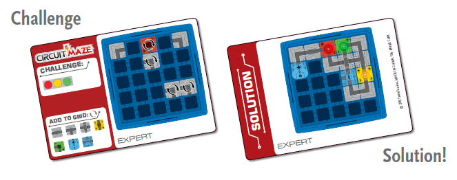

Extend Yourself - Circuit Maze: Explore Circuits with Decimals and Fractions
 Working Backwards With Challenge Cards
Working Backwards With Challenge Cards
Choose a more difficult Challenge Card. After spending time trying to solve the card, look at the solution and see if you can figure out how the circuit works. What makes this circuit special? Is it a series circuit? Is it a parallel circuit? Does it use a switch?

Fractions Back to Decimals
Explore the internet or look in your pantry or cupboards to find examples of mixed numbers on various food packages. Make a chart similar to the one in this challenge. List the mixed number, write it out in expanded form, and then write in decimal form. Remember: to add fractions, you need to have a common denominator.
For example, the weight of a box of macaroni and cheese is 7.25 ounces.
Create Your Own Challenge Card
Create your own challenge card! Invite your friends to solve your challenge. Be sure to build the circuit first so you know it works.
Then, create your own challenge card, but include an error. Invite your friends to find and correct the error. Make sure the error does not include a short circuit since that could damage your Circuit Maze.